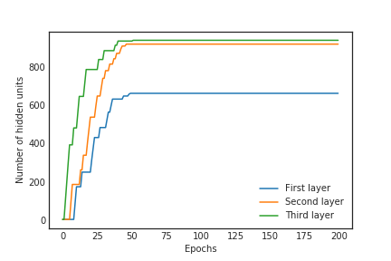
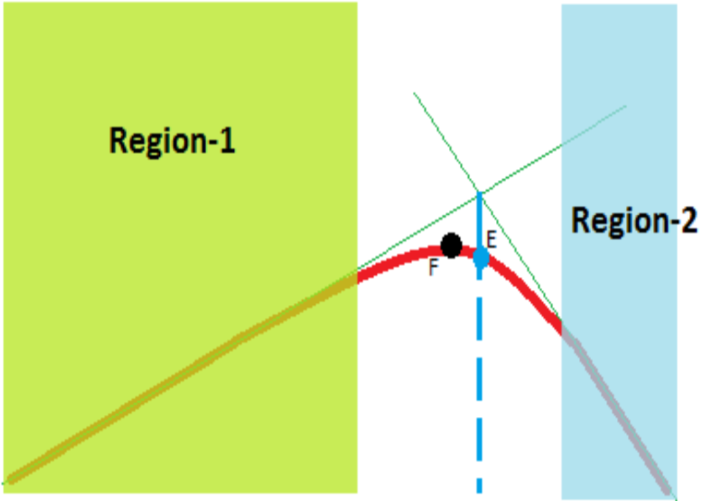

|
Sivaramakrishnan Sankarapandian
I am working as a Senior Research Engineer for Proscia trying to come up with deep learning / machine learning solutions to diagnose cancer in histopathological images.
I completed my masters in Computer Engineering from Boston University advised by Brian Kulis.
I am particularly interested in the field of applying bayesian principles to deep learning and its applications to medical domain. Papers on generative models (like GANs, VAEs, normalizing flows, autoregressive models), approximate inference, unsupervised representation learning and gazzillion of those self-supervised learning techniques interest me. I have a special liking for papers that connect seemingly disparate techniques in machine learning. I also have a soft spot for art created using AI.
On my leisure time, I sketch, I listen to ambient music, recently I am into travel cinematic videos on Youtube. My favourites creators are, Kriag Adams and Tim Kellner.
Email /
Google Scholar /
Linkedin /
Github /
Blog
|
|
|
Research
Some of my research works are highlighted below.
|
|
|
Beta-Annealed Variational Autoencoders for Glitches
Sivaramakrishnan Sankarapandian, Brian Kulis
NeurIPS workshop on Machine Learning and Physical Sciences, 2020
We propose an annealing schedule for beta in beta-VAEs inspired by the connection between beta-VAEs and Bottleneck-VAEs
|
|
|
Tailored for Real-World: A Whole Slide Image Classification System Validated on Uncurated Multi-Site Data Emulating the Prospective Pathology Workload
Julianna D. Ianni,
Rajath E. Soans,
Sivaramakrishnan Sankarapandian,
Ramachandra Vikas Chamarthi,
Devi Ayyagari
et.al
Nature Scientific Reports, 2020
We show results of a deep learning system that can triage histo images of skin lesions into four clinically relevant categories
|
|

|
Learning Compact Networks via Adaptive Network Regularization
Sivaramakrishnan Sankarapandian, Anil Kag, Rachel Manzelli, Brian Kulis
NeurIPS workshop on Compact Deep Neural Network Representation with Industrial Applications, 2018
We present results on a simple regularizer that penalizes the number of hidden units per layer, designed to encourage compactness and flexibility of the network architecture. We motivate
this algorithm by applying Small Variance Asymptotics on Bayesian Neural Networks
|
|
|
Image Compression using Deep Learning
H. Kubra Cilingir,
Sivaramakrishnan Sankarapandian, M. Ozan Tezcan
We present results on using feed forward network, autoencoders, recurrent convolutional autoencoders, Generative Adversarial Networks( (GANs) for lossy and lossless image compression
|
|

|
A novel hybrid MPPT algorithm using linear Extrapolation
Sivaramakrishnan Sankarapandian
International Conference on Computing and Network Communications (CoCoNet), 2015
We present a new hybrid Maximum Power Point Tracking algorithm for drawing maximum power from a Photovoltaic Module
|
|
{kind=link}